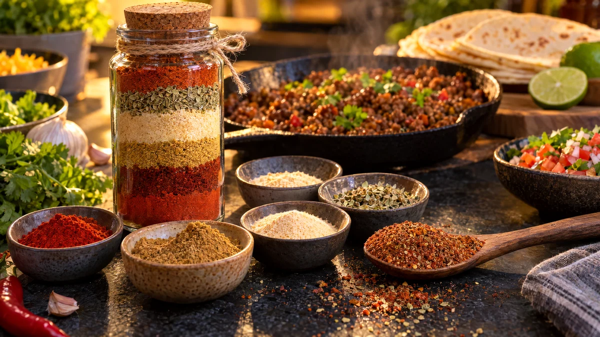

RESTFEST · RECEPTGrundrecept
Rökig tacokrydda i burk
Paprika, spiskummin, chili och oregano ur kryddhyllan blandas till en rökig, djupröd tacokrydda utan tillsatser, i en glasburk som räcker till många fredagar. Den smakar mer och saltar mindre än påsarna, och du bestämmer själv hur het den blir. I randiga lager i en hög burk blir den dessutom en fin present.
- Förberedelse
- 10 min
- Tillagning
- 0 min
- Portioner
- ca 2 dl (ca 5 tacomiddagar)
- Nivå
- Nybörjare
 Det här behöver du
Det här behöver du
Tryck på + vid det du behöver köpa.
Gör så här
- Mät upp alla kryddor i en skål och krossa eventuella klumpar med baksidan av en sked.
- Rör om tills färgen är helt jämn, eller skaka allt i en burk med lock.
- Häll upp kryddan i en torr glasburk.
- Till tacofärs: bryn 500 g köttfärs, kycklingfärs eller sojafärs. Strö över 3 msk krydda och fräs i 1 minut. Häll i 1½ dl vatten och låt sjuda i 5 minuter, tills såsen har tjocknat.
Användning och tips
- För en vegansk fredagstaco, mosa 2 burkar sköljda svarta bönor lätt och värm dem med kryddan och vattnet.
- Vill du ha en mildare krydda, halvera chilin. Vill du ha den hetare, tillsätt cayennepeppar.
- Kryddan är också god på rostad potatis och på kikärtorna i recept 53, i stället för rökt paprika och spiskummin.
- För en present, varva kryddorna i lager i en hög burk i stället för att blanda dem, och skriv på etiketten att burken ska skakas före användning.
- Lukta på kryddorna i skafferiet först. Gamla kryddor som tappat doften ger blek smak. Förvara burken mörkt och torrt och använd den inom ca 6 månader.
Mått och ugnstemperaturer
Måtten är svenska (dl, msk, tsk, krm). Ugnstemperaturerna gäller vanlig ugn med över- och undervärme; med varmluft, sänk med 20 grader.